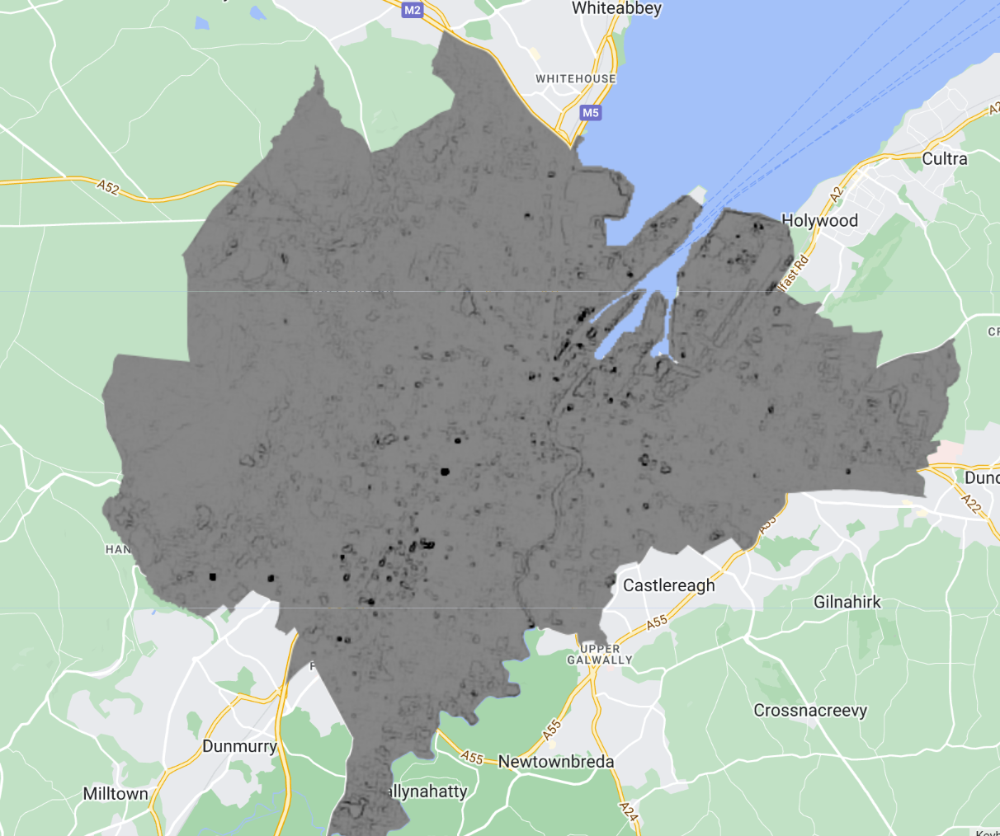

After being hot on the heels of all things Latin America, I wanted to explore an exotic island full of amazing weather & explore a new, culturally different country than England. So I was left very bewildered when I spent this weekend in Belfast. Still, it’s the city my grandfather was from until he moved to Doncaster of all places and became a miner (he actually led some riots in the 80’s, Paddy was a cool man). For this weeks entry I’ll exploring Belfast in google earth engine! It might be interesting to see if there are any differences between east and west Belfast in Satellite data, as it is very apparent in the city still to this day.
Below are images I took in west and east Belfast showing the complete culture differences within the same city.
GEE
Google earth engine is a free access platform that allows access to huge voloumes of data with a plethora of support tools that can be used to monitor spatial environments. Now, there has been growing use of the platform. Namely land management and planning. You probably have see some of its uses without even knowing, a very recent case of this is its use in tracking the covid-19 outbreak. Very nifty! Its especially useful in it being a one stop shop for analysing remote sensing data (or two stop if you need to clip a shapefile like I have). It has catalogues of satellite imagery and datasets readily available. From tne applications I have seen this is especially important as different datasets are used together in much remote sensing analyses. The breakdown of coding is much like previous work I have attempted in R but with the capacity to handle this much quicker. It also requires javascript input unlike R studio (but not much at all).
Application
Belfast
Time to explore the hometown of Paddy Close (my grandfather). To do this I loaded in L-8 level 2 collection 2 images from Landsat. I first of all used the coordinates of the street that my grandfather was born and found a GADM shapefile to correspond with clipping the area of interest, Belfast.
After adjusting cloud cover and clipping I then sought to do a few tidbits of analysis. Adjusting the cloud cover and clipping it to the shapefile of Belfast is imperative to actually see the area as it can be overshadowed by the clouds as well as giving the clear area of study
I have also performed NDVI of the area which tells of the health and density of vegetation in an area. It does this by measures the difference of near infrarer light as vegetation strongly reflects this. And so, more green indicates denser vegetation.
It shows nothing much of what you would expect; less vegetation near the centre more on the outskirts.
The GLCM of Belfast I found particularly interesting to see, as the contrast between neighbouring pixels as a measure of the texture shows that East and West Belfast have significant spikes in change, signifying that there is a dense urban environment in the two and that North and South Belfast isn’t as dense. This supports the two cultures in the city, thsoe of the West & East.
More applications
I’ve just discovered the tip of the iceburg (or Andean mountain) with application in google earth engine.
For this section i’ll briefly discuss some case studies from the GEE website.
- Global Forest Cover Change - Land study

Earth Engine was used to examine global tree cover, resulting in a comprehensive study Covering nearly all of Earth’s land except Antarctica and some Arctic islands.
- The Map of Life - The impact of environmental changes

The Map of Life project has created an interactive map that enables conservationists to examine habitat ranges and evaluate the conservation status of individual species.
- Malaria Risk Mapping - Potential outbreaks predictions

The Global Health Group San Francisco used Earth Engine for malaria risk mapping to forecast outbreaks.
As seen from the examples there are a plethora of uses in google earth engine, some even offer the code so you can apply these to your own interests for analysis. In fact 90 journals published articles on GEE in a 2 year period since January 2020. In these papers most revolve around areas within remote sensing of the environment. What I did find poignant however is the lack of studies based within less developed nations as this is such an ideal tool to provide an analysis in areas such as heat and flood risk as well as assessing the health of local vegetation. The map below shows this, with a breakdown of application of GEE by each country
Some of the most popular data recorded from this are Landsat 8 and Sentinel 2. These make sense due to the already applicability used in previous studies.
As well as this, it offers less of a barrier to entry due to its easy accessibility to use. I can see why as there’s less of a need for SNAP or to search, find & process data in R.
Reflections
I found GEE a joy to utilise but again seemed like a hurdle to handle to get control of. It reminded me of when I started my career in analysis and got handed a huge on powerBI and was asked to produce something by the end of the week. I also had issues in clipping. Basically, my initial clip was just the area in where my grandfather was born so when I applied NDVI to it the resolution was not high enough to provide any difference.

Alongside this and after the entry on the Andean mountains I was curious to explore other ratios and textures. Some that I feel that could be applied to the case in Belfast is the NDBI (Normalized Difference Built-up Index) that would show built-up areas from natural landscapes and weather there is differences in east to west. As well as using contrast in GLCM which would show presence of distincts boundaries. Further into this, perhaps another method/type of inmagery could be used to tell if the buildings are structurally and materially different from east to west Belfast. I found that this can be achieved within a combination of spectral bands and texture features to show the form of contructional materials, paint or rood colours!
You may be thinking why did I stop at GLCM and not move on to some PCA, I attempted this in engine using the classes example but recieved around 90 layers. I didnt implement this into the application section as I was unsure if I did a line of code wrong implementing this or if most variations were just located in some of the first instences of PCA (shown below).

I also found it difficult to think of a way to discuss the application, this is why it was based upon the cases provided by them to show what the engine is capable of.
Other than that I can see myself toying around with google earth engine from even in my day to day life. I dont think its a talent I can whip out at parties however.
One thing that I think is very important within google earth engines landscape is the consideration personal data inputted, it runs the risk of vulnerable information being shown to the masses.